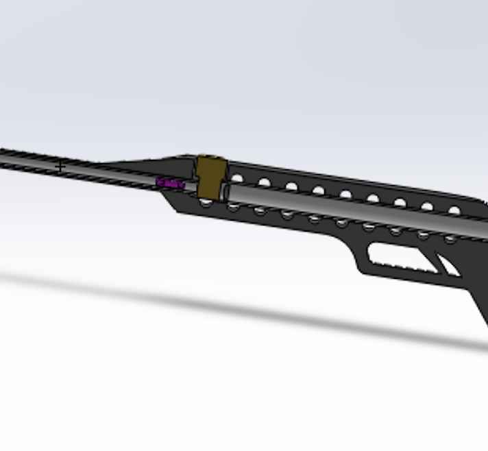
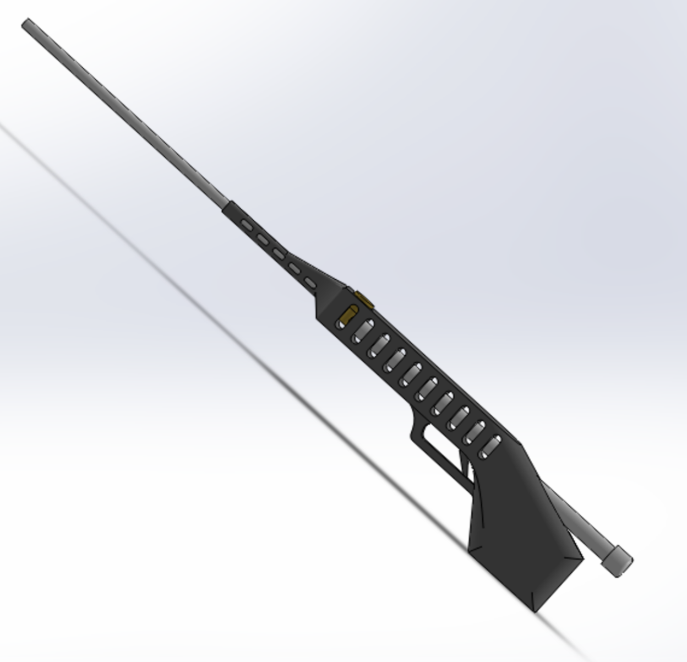
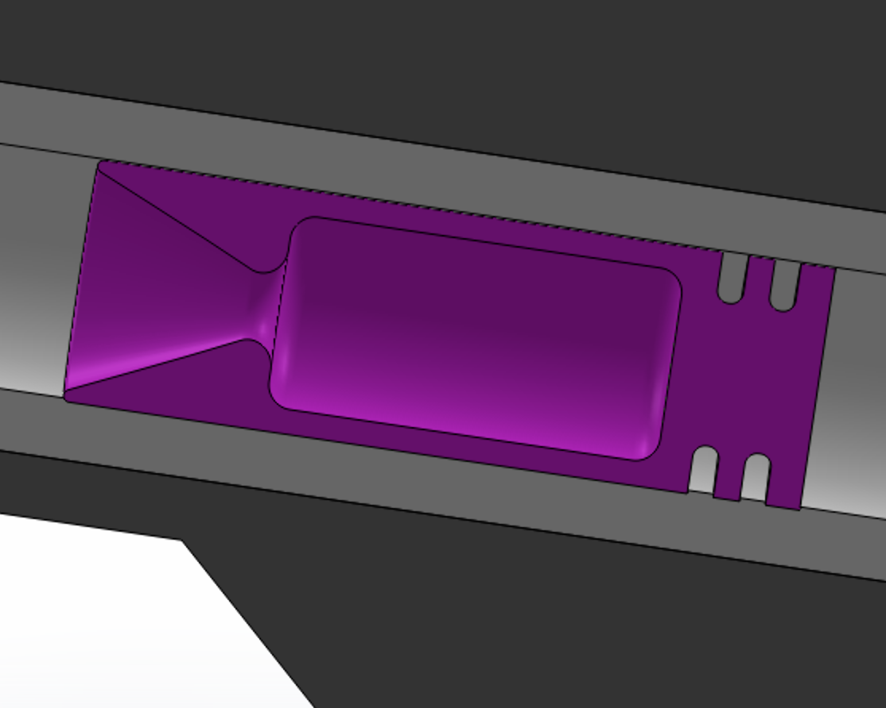
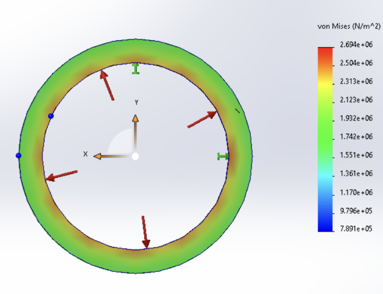
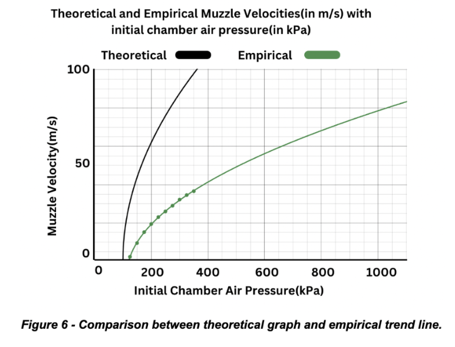
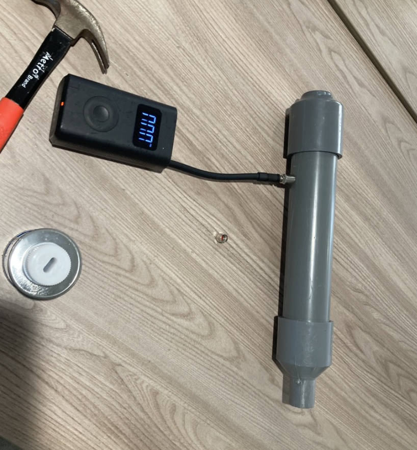

Theoretical Design
Boba Launcher — Version 2

CAD Design
Developed a detailed SolidWorks model exploring pressure chamber geometry, sealing strategies, and projectile guidance under a 70 psi maximum operating pressure constraint while achieving a theoretical launch velocity of 50 m/s.
The design uses only real off-the-shelf, pressure-rated PVC standards and commercially available solenoid valves, rather than custom components. This constraint strongly influenced geometry, layout, and structural decisions. The project remains a theoretical design.

ANSYS Simulation
Structural integrity was evaluated using static load analysis in ANSYS Mechanical to verify stress distributions under theoretical internal pressure loads. Internal flow behavior was studied using ANSYS Fluent to estimate theoretical performance and velocity trends.
These simulations served as comparative design tools to understand system behavior and tradeoffs rather than optimizing for construction.
Design Models



Practical Implementation
Putty Launcher — Version 1

Adiabatic Calculations
This project launched a 15 g putty projectile at approximately 40–50 m/s using a maximum operating pressure of 50 psi.
Theoretical performance modeling was based on adiabatic expansion of a diatomic gas, justified by experimental pressure measurements indicating characteristic expansion times of 75–150 ms. This allowed closed-form energy and pressure relationships to be derived.
View Full Report (PDF)
CAD + Testing + Prototypes
Modeled the full assembly in CAD and performed basic validation of mechanical loading assumptions. Iterated on barrel geometry, chamber volume, and layout to improve consistency and repeatability with readily available components. Additionally performed static pressure tests for safety assurance.

Final Product Showcase
The final system demonstrated consistent performance across repeated tests. Design iteration focused on improving valve response consistency, sealing reliability, and projectile–barrel interface behavior. Testing was conducted on secured private property in Hong Kong in accordance with local legal constraints.
Launch Demonstrations
Conducted legally in Hong Kong